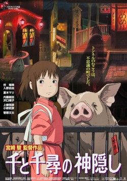

01 / Our picks
Inception
Christopher Nolan
A specialist who enters dreams takes on a dangerous task: plant an idea instead of stealing one.
DirectorChristopher Nolan
Saved ratings from 02 Oct 2026
TONIGHT’S MOVIE
Choose a genre and your available time. Let CinePick do the rest.

YOUR MOVIE NIGHT STARTS HERE
Set your preferences, then press the button. Save a film to your watchlist when it catches your eye.
12 films · 8 genresHANDPICKED FOR YOU
Our original four editorial picks.
01 / Our picks
Christopher Nolan
A specialist who enters dreams takes on a dangerous task: plant an idea instead of stealing one.
DirectorChristopher Nolan
Saved ratings from 02 Oct 2026

02 / Our picks
Rian Johnson
A detective investigates a writer’s death, discovering that everyone in the family has something to hide.
DirectorRian Johnson
Saved ratings from 02 Oct 2026

03 / Our picks
Byron Howard, Rich Moore
A rookie rabbit officer teams up with a clever fox to solve a mystery in a city of animals.
DirectorByron Howard, Rich Moore
Saved ratings from 02 Oct 2026

04 / Our picks
Hayao Miyazaki
A young girl enters a world of spirits and must find the courage to save her parents.
DirectorHayao Miyazaki
Saved ratings from 02 Oct 2026